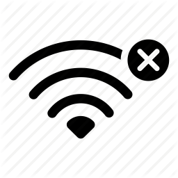

<!--
  Generated template for the ClasificadosPage page.

  See http://ionicframework.com/docs/components/#navigation for more info on
  Ionic pages and navigation.
-->
<ion-header>

  <ion-navbar>
    <ion-title>Clasificados</ion-title>
  </ion-navbar>

</ion-header>

<ion-content (tap)="reintentarConexion($event)">


    <ion-card *ngIf="fallo">
        
        <ion-card-content>
          <ion-card-title class="card-title">
            ¡Error de conexión!
            </ion-card-title>
          <p> {{msgFallo}}</p>
        </ion-card-content>
        <p class="consejo">Toque la pantalla para reintar la conexión</p>
      </ion-card>

  <ion-item-group *ngFor="let equipo of equipos;let i=index">
      <ion-item-divider color="primary" *ngIf="i%4==0 || i==0">
        Grupo {{equipo.grupo}}
      </ion-item-divider>
      <ion-item >{{equipo.nombre}}
        <ion-avatar item-start>
          
        </ion-avatar>
      </ion-item>
    </ion-item-group>
</ion-content>
